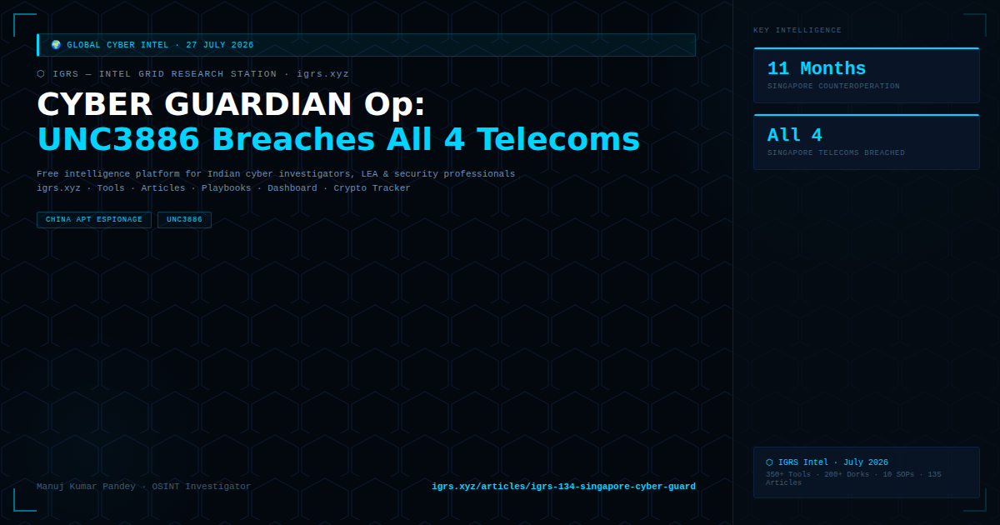

Singapore's Cyber Security Agency (CSA) revealed in February 2026 that UNC3886 — a China-linked APT — had successfully breached all four of Singapore's major telecommunications providers in a months-long espionage campaign using zero-day exploits and rootkits. Singapore mounted CYBER GUARDIAN — its largest ever cyber counteroperation, running for 11 months — to fully evict the attackers and harden defences.
| Attribute | Detail |
|---|---|
| Attribution | China-linked APT — tracked by Mandiant/Google |
| Targets | All four Singapore major telecoms (names not fully disclosed) |
| Duration | Months-long persistent access before detection |
| Tools | Zero-day exploits in edge network devices (routers, switches, VPN) + custom rootkits for persistence |
| Objective | Espionage — access to telecom traffic, subscriber data, government communications |
| Parameter | Detail |
|---|---|
| Duration | 11 months |
| Scale | Largest ever cyber operation by Singapore |
| Outcome | Full eviction achieved; network hardening completed |
| Method | Coordinated across all four telecom operators simultaneously |
Rootkit persistence: UNC3886 used custom rootkits to maintain persistent access to telecom infrastructure even through routine security scans and software updates. Rootkit-level compromise requires complete firmware reinstallation on affected devices — not just software patching.
India's telecom sector — Airtel, Jio, BSNL, Vi — faces similar threat vectors. BSNL suffered a documented data breach in July 2024 (IMSI numbers, SIM data stolen). China-linked APTs have established pattern of targeting South Asian and Southeast Asian telecom infrastructure. TRAI and DoT have issued cybersecurity directions to Indian telecom operators. CERT-In coordinates telecom sector incident response.
For Indian telecom investigators: Network edge device firmware integrity verification, anomalous outbound traffic monitoring, and deep packet inspection on core network links are the primary UNC3886-pattern detection mechanisms. Any suspected telecom compromise: notify CERT-In + DoT simultaneously.